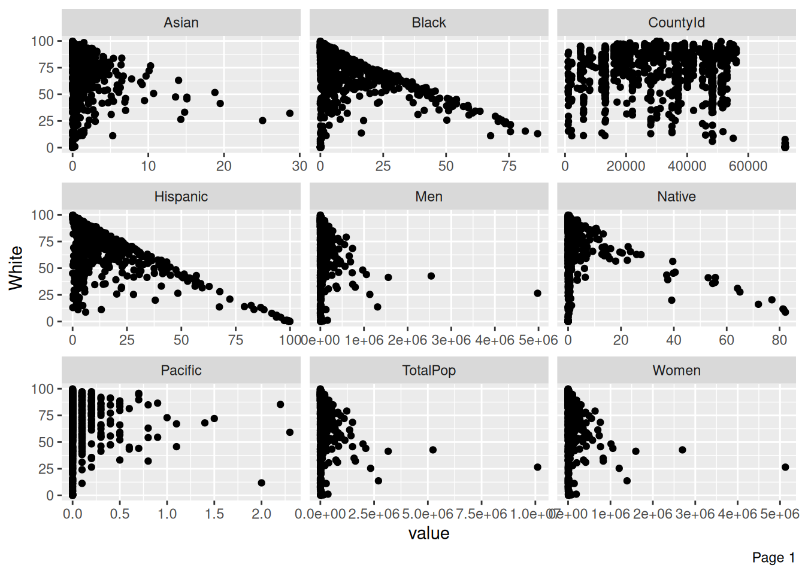
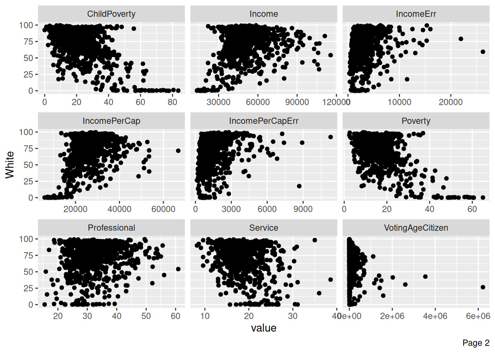
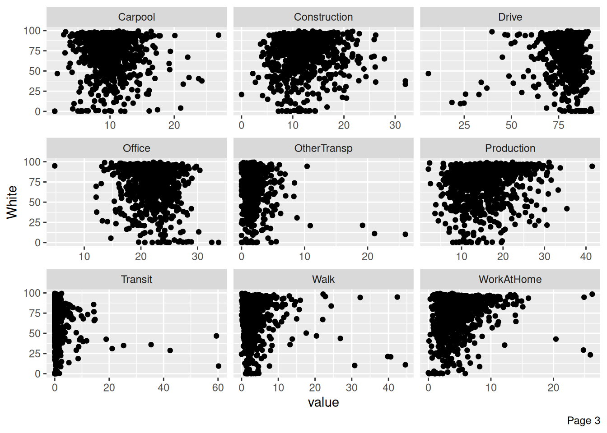
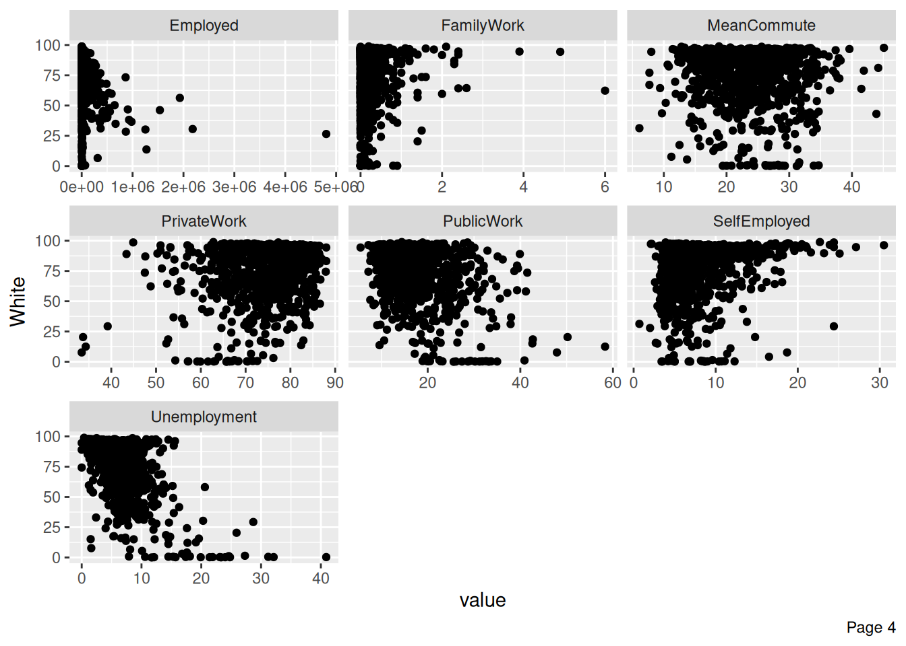

Nico T
Looking at our variables
First Observations
CountyId State County TotalPop Men Women Hispanic White Black
1 1001 Alabama Autauga County 55036 26899 28137 2.7 75.4 18.9
2 1003 Alabama Baldwin County 203360 99527 103833 4.4 83.1 9.5
3 1005 Alabama Barbour County 26201 13976 12225 4.2 45.7 47.8
4 1007 Alabama Bibb County 22580 12251 10329 2.4 74.6 22.0
5 1009 Alabama Blount County 57667 28490 29177 9.0 87.4 1.5
6 1011 Alabama Bullock County 10478 5616 4862 0.3 21.6 75.6
Native Asian Pacific VotingAgeCitizen Income IncomeErr IncomePerCap
1 0.3 0.9 0 41016 55317 2838 27824
2 0.8 0.7 0 155376 52562 1348 29364
3 0.2 0.6 0 20269 33368 2551 17561
4 0.4 0.0 0 17662 43404 3431 20911
5 0.3 0.1 0 42513 47412 2630 22021
6 1.0 0.7 0 8212 29655 5376 20856
IncomePerCapErr Poverty ChildPoverty Professional Service Office Construction
1 2024 13.7 20.1 35.3 18.0 23.2 8.1
2 735 11.8 16.1 35.7 18.2 25.6 9.7
3 798 27.2 44.9 25.0 16.8 22.6 11.5
4 1889 15.2 26.6 24.4 17.6 19.7 15.9
5 850 15.6 25.4 28.5 12.9 23.3 15.8
6 2355 28.5 50.4 19.7 17.1 18.6 14.0
Production Drive Carpool Transit Walk OtherTransp WorkAtHome MeanCommute
1 15.4 86.0 9.6 0.1 0.6 1.3 2.5 25.8
2 10.8 84.7 7.6 0.1 0.8 1.1 5.6 27.0
3 24.1 83.4 11.1 0.3 2.2 1.7 1.3 23.4
4 22.4 86.4 9.5 0.7 0.3 1.7 1.5 30.0
5 19.5 86.8 10.2 0.1 0.4 0.4 2.1 35.0
6 30.6 73.1 15.7 0.3 6.2 1.7 3.0 29.8
Employed PrivateWork PublicWork SelfEmployed FamilyWork Unemployment
1 24112 74.1 20.2 5.6 0.1 5.2
2 89527 80.7 12.9 6.3 0.1 5.5
3 8878 74.1 19.1 6.5 0.3 12.4
4 8171 76.0 17.4 6.3 0.3 8.2
5 21380 83.9 11.9 4.0 0.1 4.9
6 4290 81.4 13.6 5.0 0.0 12.1[1] 3220 37 CountyId State County TotalPop
Min. : 1001 Texas : 254 Washington County: 30 Min. : 74
1st Qu.:19032 Georgia : 159 Jefferson County : 25 1st Qu.: 11214
Median :30024 Virginia: 133 Franklin County : 24 Median : 25848
Mean :31394 Kentucky: 120 Jackson County : 23 Mean : 100768
3rd Qu.:46106 Missouri: 115 Lincoln County : 23 3rd Qu.: 66608
Max. :72153 Kansas : 105 Madison County : 19 Max. :10105722
(Other) :2334 (Other) :3076
Men Women Hispanic White
Min. : 39 Min. : 35 Min. : 0.0 Min. : 0.00
1st Qu.: 5646 1st Qu.: 5554 1st Qu.: 2.1 1st Qu.: 63.50
Median : 12879 Median : 12994 Median : 4.1 Median : 83.60
Mean : 49588 Mean : 51180 Mean : 11.3 Mean : 74.92
3rd Qu.: 33017 3rd Qu.: 33594 3rd Qu.: 10.0 3rd Qu.: 92.80
Max. :4979641 Max. :5126081 Max. :100.0 Max. :100.00
Black Native Asian Pacific
Min. : 0.000 Min. : 0.000 Min. : 0.000 Min. : 0.00000
1st Qu.: 0.600 1st Qu.: 0.100 1st Qu.: 0.200 1st Qu.: 0.00000
Median : 2.000 Median : 0.300 Median : 0.600 Median : 0.00000
Mean : 8.682 Mean : 1.768 Mean : 1.289 Mean : 0.08342
3rd Qu.: 9.500 3rd Qu.: 0.600 3rd Qu.: 1.200 3rd Qu.: 0.10000
Max. :86.900 Max. :90.300 Max. :41.800 Max. :33.70000
VotingAgeCitizen Income IncomeErr IncomePerCap
Min. : 59 Min. : 11680 Min. : 262 Min. : 5943
1st Qu.: 8442 1st Qu.: 40622 1st Qu.: 1730 1st Qu.:21568
Median : 19699 Median : 47636 Median : 2587 Median :25139
Mean : 71310 Mean : 48995 Mean : 3139 Mean :25657
3rd Qu.: 50366 3rd Qu.: 55476 3rd Qu.: 3802 3rd Qu.:28997
Max. :6218279 Max. :129588 Max. :41001 Max. :69529
IncomePerCapErr Poverty ChildPoverty Professional
Min. : 129 Min. : 2.40 Min. : 0.00 Min. :11.40
1st Qu.: 832 1st Qu.:11.47 1st Qu.:14.90 1st Qu.:27.20
Median : 1225 Median :15.40 Median :21.50 Median :30.50
Mean : 1514 Mean :16.78 Mean :23.04 Mean :31.48
3rd Qu.: 1802 3rd Qu.:19.80 3rd Qu.:28.60 3rd Qu.:34.90
Max. :16145 Max. :65.20 Max. :83.60 Max. :69.00
NA's :1
Service Office Construction Production
Min. : 0.00 Min. : 4.80 Min. : 0.00 Min. : 0.00
1st Qu.:15.80 1st Qu.:19.90 1st Qu.: 9.80 1st Qu.:11.50
Median :17.80 Median :22.10 Median :12.10 Median :15.40
Mean :18.21 Mean :21.88 Mean :12.59 Mean :15.84
3rd Qu.:20.20 3rd Qu.:23.90 3rd Qu.:14.80 3rd Qu.:19.50
Max. :46.40 Max. :37.20 Max. :36.40 Max. :48.70
Drive Carpool Transit Walk
Min. : 4.60 Min. : 0.000 Min. : 0.000 Min. : 0.000
1st Qu.:77.30 1st Qu.: 8.000 1st Qu.: 0.100 1st Qu.: 1.400
Median :81.00 Median : 9.500 Median : 0.300 Median : 2.300
Mean :79.63 Mean : 9.852 Mean : 0.939 Mean : 3.244
3rd Qu.:84.10 3rd Qu.:11.300 3rd Qu.: 0.800 3rd Qu.: 3.825
Max. :97.20 Max. :29.300 Max. :61.800 Max. :59.200
OtherTransp WorkAtHome MeanCommute Employed
Min. : 0.000 Min. : 0.000 Min. : 5.10 Min. : 39
1st Qu.: 0.800 1st Qu.: 2.900 1st Qu.:19.60 1st Qu.: 4573
Median : 1.300 Median : 4.100 Median :23.20 Median : 10612
Mean : 1.599 Mean : 4.737 Mean :23.47 Mean : 47093
3rd Qu.: 1.900 3rd Qu.: 5.800 3rd Qu.:27.00 3rd Qu.: 28747
Max. :43.200 Max. :33.000 Max. :45.10 Max. :4805817
PrivateWork PublicWork SelfEmployed FamilyWork
Min. :31.10 Min. : 4.40 Min. : 0.000 Min. :0.0000
1st Qu.:71.20 1st Qu.:12.70 1st Qu.: 5.200 1st Qu.:0.1000
Median :76.10 Median :15.90 Median : 6.800 Median :0.2000
Mean :74.86 Mean :17.09 Mean : 7.773 Mean :0.2788
3rd Qu.:80.20 3rd Qu.:19.90 3rd Qu.: 9.200 3rd Qu.:0.3000
Max. :88.80 Max. :64.80 Max. :38.000 Max. :8.0000
Unemployment
Min. : 0.000
1st Qu.: 4.475
Median : 6.100
Mean : 6.666
3rd Qu.: 8.000
Max. :40.900
It looks like we have 3220 counties with 37 varibles. Two are characters, and the rest are doubles or integers respectively. The race variables seem to measure the percentage of a county is said race. Some of the variables are measured in percentages while others are measured in counts.
Looking at the counties with 100 percent white or hispanic populations
This seems odd because I would assume that very little communities in the united states would have homogeneous populations.
CountyId State County TotalPop Men Women Hispanic
1 46075 South Dakota Jones County 740 375 365 0
2 72019 Puerto Rico Barranquitas Municipio 29237 14398 14839 100
White Black Native Asian Pacific VotingAgeCitizen Income IncomeErr
1 100 0 0 0 0 617 39432 8759
2 0 0 0 0 0 22093 15694 1496
IncomePerCap IncomePerCapErr Poverty ChildPoverty Professional Service Office
1 26526 3319 10.8 0.0 44.7 9.8 15.1
2 7716 597 60.7 77.8 28.4 22.3 23.9
Construction Production Drive Carpool Transit Walk OtherTransp WorkAtHome
1 17.2 13.3 61.6 4.5 0.0 20.4 1.9 11.6
2 14.1 11.3 87.4 6.6 0.8 2.9 0.0 2.3
MeanCommute Employed PrivateWork PublicWork SelfEmployed FamilyWork
1 14.9 430 55.3 16.3 22.6 5.8
2 31.2 6011 65.7 25.6 8.7 0.0
Unemployment
1 2.9
2 11.7These communties also report that the populations of the other groups are 0, so I am not concerned with these values.
Missing Values
It appears that we have 1 missing value in the child poverty variable
Looking at the missing data
CountyId State County TotalPop Men Women Hispanic White Black Native
1 15005 Hawaii Kalawao County 86 41 45 4.7 20.9 0 0
Asian Pacific VotingAgeCitizen Income IncomeErr IncomePerCap IncomePerCapErr
1 29.1 33.7 84 61750 11280 46024 7959
Poverty ChildPoverty Professional Service Office Construction Production
1 12.7 NA 22.2 38.1 20.6 0 19
Drive Carpool Transit Walk OtherTransp WorkAtHome MeanCommute Employed
1 32.8 9.4 0 40.6 10.9 6.3 6.6 63
PrivateWork PublicWork SelfEmployed FamilyWork Unemployment
1 34.9 61.9 3.2 0 0We might want to look further into how to solve for this missing value



